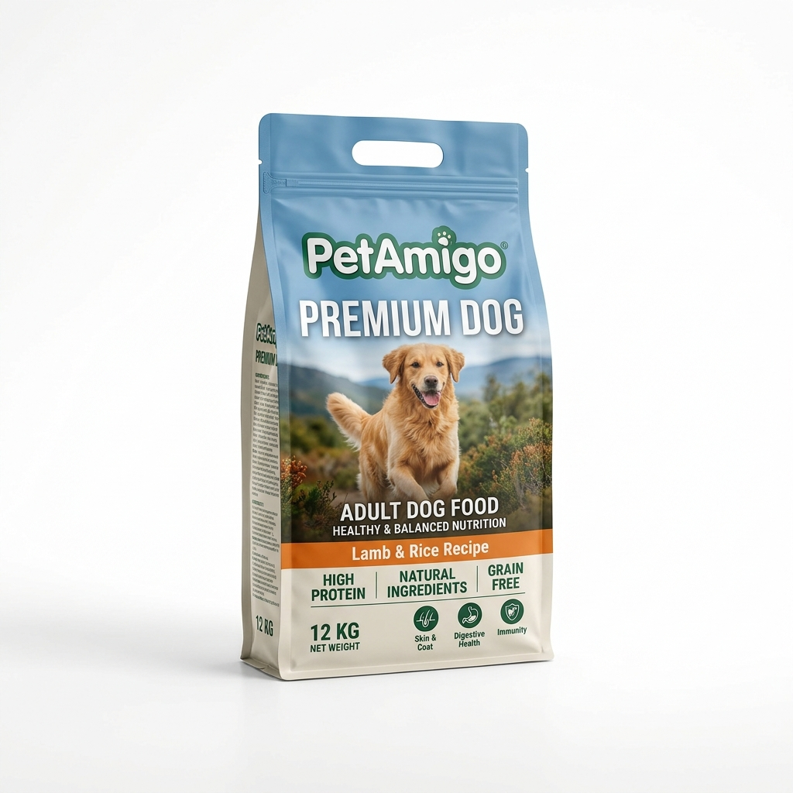
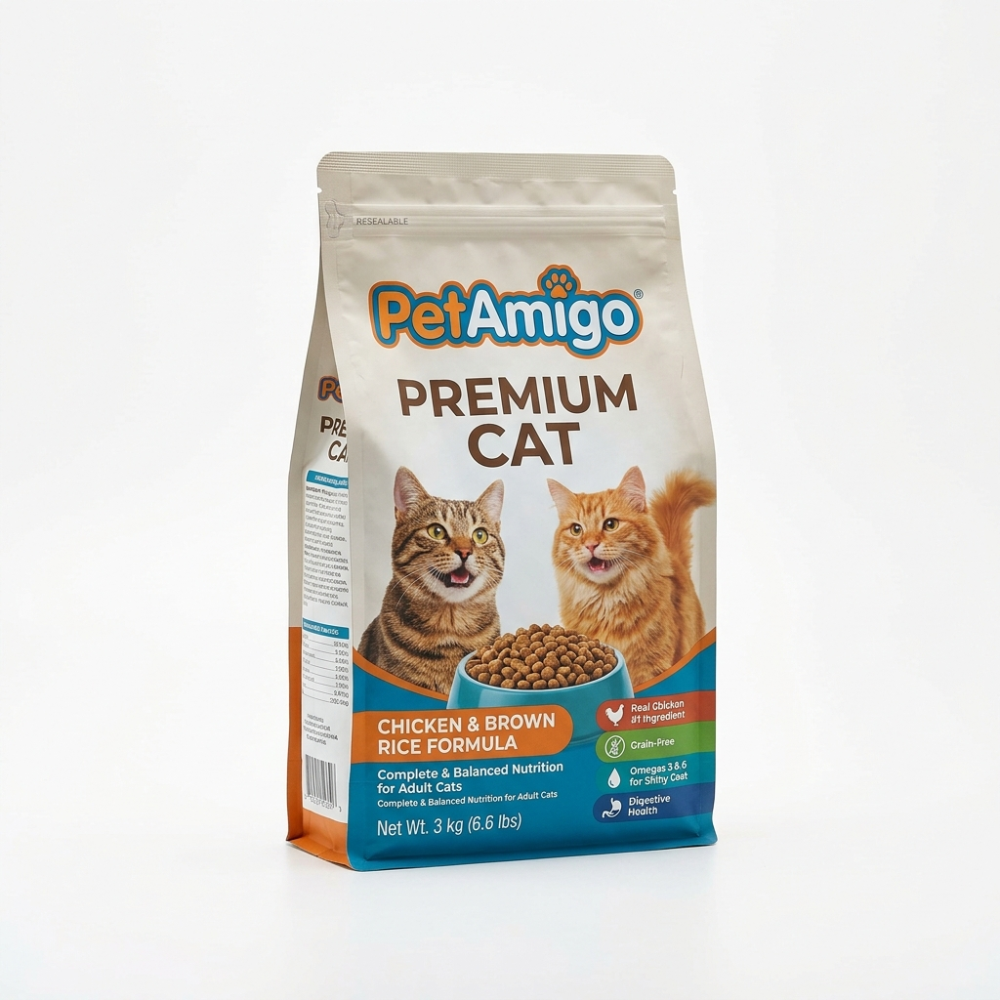

Oferecemos rações balanceadas e nutritivas para cães e gatos de todas as raças e idades. Escolha a melhor alimentação para o seu pet!
Ração PetAmigo Premium Dog

Ração PetAmigo Premium Dog - 15kg
Descrição: Ração seca premium formulada especialmente para cães adultos de médio e grande porte.
Rica em proteínas de alta qualidade, com frango como ingrediente principal. Contém vitaminas, minerais e ômega-3
para manter o pelo brilhante e a saúde do seu cão em dia. Sem corantes artificiais.
Peso: 15 kg
Indicado para: Cães adultos (raças médias e grandes)
Sabor: Frango e arroz
Marca: PetAmigo
Valor: R$ 189,90
Ração PetAmigo Premium Cat

Ração PetAmigo Premium Cat - 10kg
Descrição: Ração seca premium desenvolvida para atender às necessidades nutricionais dos gatos
domésticos castrados e não castrados. Formulada com salmão como proteína principal, auxilia na saúde
urinária e controle de hairballs. Enriquecida com taurina para saúde cardíaca e ocular.